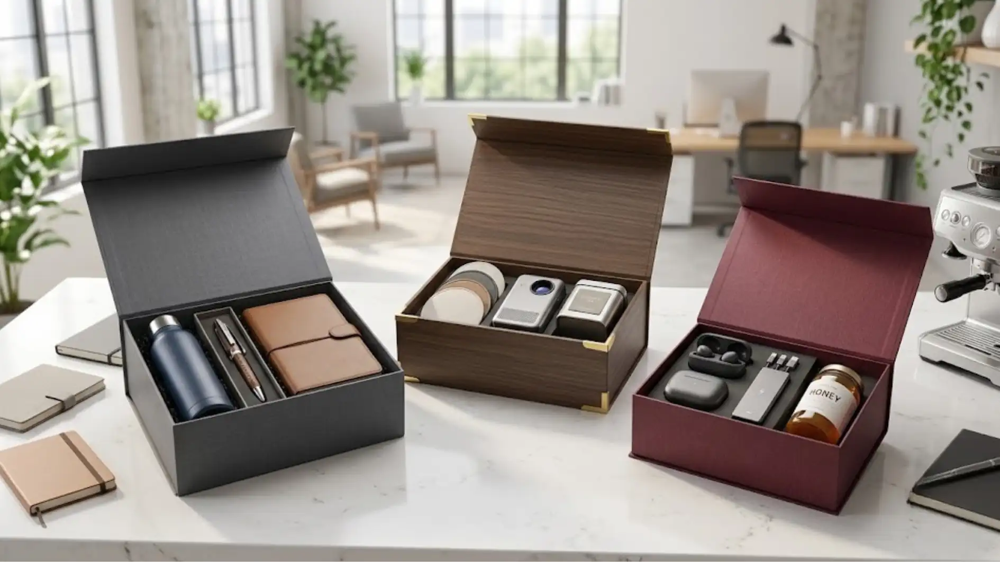

Corporate gift kantor adalah hadiah resmi yang diberikan perusahaan kepada karyawan, klien, atau mitra bisnis sebagai bentuk apresiasi dan penguatan hubungan. Pemilihan produk yang tepat dapat mencerminkan citra profesional perusahaan sekaligus mempererat relasi jangka panjang.
Apa Itu Corporate Gift Kantor
Corporate gift kantor merujuk pada produk atau paket hadiah yang dirancang khusus untuk kebutuhan bisnis, baik untuk internal (karyawan) maupun eksternal (klien dan mitra). Berbeda dengan hadiah pribadi, corporate gift umumnya dibuat dengan standar tampilan yang seragam, sering kali disertai logo perusahaan, dan dipersiapkan dalam jumlah yang cukup besar.
Konsep ini tumbuh dari kebutuhan perusahaan untuk menjaga hubungan baik secara berkelanjutan. Pemberian hadiah pada momen tertentu, seperti akhir tahun, ulang tahun perusahaan, atau peluncuran produk, menjadi cara yang dianggap efektif untuk menunjukkan penghargaan tanpa harus berbicara secara langsung dalam pertemuan formal.
Selain nilai fungsionalnya, corporate gift kantor juga berfungsi sebagai media branding. Setiap kali produk tersebut digunakan oleh penerima, nama dan logo perusahaan ikut terlihat, sehingga secara tidak langsung memperluas jangkauan pengenalan brand.
Mengapa Perusahaan Membutuhkan Corporate Gift Kantor
Kebutuhan akan corporate gift kantor umumnya muncul dari beberapa situasi, seperti perayaan hari jadi perusahaan, penghargaan kinerja karyawan, penyambutan klien baru, atau sebagai pelengkap acara seminar dan pameran. Pemberian hadiah yang tepat waktu dan relevan dapat meningkatkan rasa dihargai pada penerimanya.
Bagi tim internal, hadiah kantor sering dikaitkan dengan peningkatan motivasi kerja. Karyawan yang merasa diperhatikan cenderung memiliki keterikatan yang lebih baik terhadap perusahaan. Sementara untuk pihak eksternal, seperti klien dan vendor, corporate gift menjadi salah satu bentuk menjaga hubungan bisnis yang berkelanjutan tanpa kesan memaksa.
Selain aspek hubungan, corporate gift kantor juga dapat menjadi bagian dari strategi pemasaran tidak langsung. Produk yang dipilih dengan baik, disertai desain yang rapi dan logo yang jelas, dapat meninggalkan kesan positif yang bertahan lama dibandingkan materi promosi konvensional seperti brosur.
Bagaimana Memilih Jenis Corporate Gift Kantor yang Tepat
Pemilihan corporate gift kantor sebaiknya mempertimbangkan beberapa faktor utama, yaitu profil penerima, tujuan pemberian, anggaran yang tersedia, serta konsistensi dengan identitas brand perusahaan.
Untuk penerima internal seperti karyawan, produk yang bersifat fungsional dan dapat digunakan sehari-hari, misalnya alat tulis, tumbler, atau perlengkapan kerja, umumnya lebih diminati karena nilai kegunaannya. Sementara untuk klien atau mitra bisnis, pemilihan produk yang lebih eksklusif dengan kemasan premium sering dianggap lebih sesuai untuk menjaga kesan profesional.
Anggaran juga menjadi pertimbangan penting. Perusahaan perlu menyesuaikan jumlah penerima dengan kisaran harga per unit agar alokasi biaya tetap efisien tanpa mengurangi kualitas produk. Selain itu, konsistensi desain, seperti pemilihan warna dan penempatan logo, membantu menjaga kesan rapi ketika hadiah diberikan dalam jumlah besar.
Jenis Produk yang Umum Digunakan sebagai Corporate Gift Kantor
Ragam produk corporate gift kantor cukup luas dan dapat disesuaikan dengan kebutuhan acara. Beberapa kategori yang umum dipilih perusahaan antara lain:
- Alat tulis kantor seperti notebook, pulpen, dan agenda tahunan.
- Perlengkapan kerja seperti tumbler, mouse pad, dan flashdisk.
- Hampers dan parcel untuk momen perayaan tertentu.
- Paket eksklusif dalam kemasan box custom dengan logo perusahaan.
- Merchandise fungsional seperti tas, jaket, atau topi berlogo.
Kombinasi beberapa produk dalam satu paket gift set juga sering menjadi pilihan karena memberikan kesan lebih lengkap dibandingkan hadiah tunggal. Pemilihan kombinasi ini biasanya disesuaikan dengan tema acara serta kebutuhan penerima.

Kemasan corporate gift kantor siap kirim
Peran Custom Logo dalam Corporate Gift Kantor
Penambahan logo perusahaan pada produk gift menjadi salah satu elemen yang membedakan corporate gift dari hadiah pada umumnya. Selain memperkuat identitas brand, logo yang ditempatkan secara tepat pada kemasan atau produk dapat meningkatkan nilai profesionalitas hadiah tersebut.
Proses custom logo umumnya melibatkan penyesuaian desain, pemilihan teknik cetak yang sesuai dengan bahan produk, serta pengaturan tata letak agar tetap terlihat rapi. Perusahaan disarankan untuk berkoordinasi dengan vendor mengenai kebutuhan desain sejak awal agar hasil akhir sesuai dengan standar brand guideline yang berlaku.
Faktor yang Perlu Diperhatikan Sebelum Memesan
Sebelum melakukan pemesanan corporate gift kantor dalam jumlah besar, ada beberapa hal yang sebaiknya dipertimbangkan agar proses berjalan lancar dan hasil sesuai harapan.
- Jumlah Penerima: tentukan jumlah penerima secara pasti agar tidak terjadi kekurangan atau kelebihan stok.
- Estimasi Waktu Produksi: perhatikan estimasi waktu produksi dan pengiriman, terutama jika hadiah dibutuhkan untuk acara dengan tanggal tetap.
- Kualitas Bahan: pastikan kualitas bahan produk sesuai dengan citra perusahaan yang ingin ditampilkan.
- Kemasan Tambahan: diskusikan opsi kemasan tambahan seperti kartu ucapan atau pita agar tampilan lebih menarik saat diserahkan.
Perencanaan yang dilakukan jauh sebelum tanggal acara umumnya membantu menghindari kendala produksi mendadak, terutama pada momen tertentu seperti akhir tahun ketika permintaan corporate gift cenderung meningkat.
Kesalahan Umum dalam Pemilihan Corporate Gift Kantor
Beberapa kesalahan yang kerap terjadi dalam proses pemilihan corporate gift kantor antara lain memilih produk tanpa mempertimbangkan kebutuhan penerima, mengabaikan konsistensi desain logo, serta melakukan pemesanan mendadak tanpa memperhitungkan waktu produksi.
Kesalahan lain yang cukup sering ditemui adalah kurangnya koordinasi antara tim internal dengan vendor terkait detail teknis, seperti ukuran produk, jenis bahan, atau posisi logo. Hal ini dapat menyebabkan hasil akhir tidak sesuai dengan ekspektasi awal. Oleh karena itu, komunikasi yang jelas sejak tahap perencanaan menjadi kunci penting dalam proses pengadaan corporate gift kantor.
Tips Memastikan Corporate Gift Kantor Tampil Profesional
Untuk menghasilkan corporate gift kantor yang terlihat profesional, perusahaan dapat memperhatikan beberapa hal berikut: memilih palet warna yang konsisten dengan identitas brand, menggunakan kemasan yang rapi dan tidak berlebihan, memastikan kualitas cetak logo tajam dan tidak pudar, serta menyesuaikan pemilihan produk dengan konteks acara agar terkesan relevan.
Detail kecil seperti pemilihan jenis kertas kartu ucapan atau warna pita kemasan juga dapat memberikan kesan tambahan yang membuat penerima merasa lebih dihargai.
Corporate gift kantor merupakan investasi jangka panjang dalam menjaga hubungan baik dengan karyawan, klien, dan mitra bisnis. Pemilihan produk yang tepat, didukung dengan perencanaan matang dan konsistensi desain logo, dapat membantu perusahaan menyampaikan apresiasi sekaligus memperkuat citra brand secara profesional. Perusahaan disarankan untuk memulai proses pemesanan jauh-jauh hari agar hasil akhir sesuai dengan kebutuhan dan momen yang ditargetkan.
- Konsultasikan kebutuhan corporate gift kantor Anda dengan tim kami
- Dapatkan rekomendasi produk sesuai profil penerima dan budget
- Nikmati proses pengadaan yang efisien dari desain hingga pengiriman